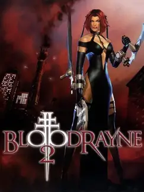

 |
|
| Tiempo de juego | 20s |
| Última actividad | 16/1/2026 11:40:21 |
| Añadido | 17/11/2025 17:53:32 |
| Modificado | 17/11/2025 17:54:15 |
| Estado de finalización | Jugado |
| Librería | Playnite |
| Fuente | |
| Plataforma | PC (Windows) |
| Fecha de lanzamiento | 12/10/2004 |
| Puntuación de la Comunidad | 55 |
| Puntuación de la Crítica | 64 |
| Puntuación de usuario | |
| Género | Adventure Hack and slash/Beat 'em up |
| Desarrollador | Terminal Reality |
| Editor | Majesco Entertainment Sony Computer Entertainment of America THQ |
| Característica | Single Player |
| Enlaces | GOG |
| Tag | |
Si el primer BloodRayne era rock gótico, la secuela es punk rock con un bate lleno de clavos. "BloodRayne 2" agarra la fórmula de su predecesor, le inyecta una dosis de esteroides y la suelta en una ciudad moderna para que haga un quilombo todavía más grande. Es más rápido, más sangriento y mucho más zarpado.
La historia salta a los 2000. Rayne, nuestra dhampir favorita, se embarca en una vendetta personal para cazar a sus medio-hermanos, una cábala de vampiros de alta cuna que planean dominar el mundo. El cambio de la Segunda Guerra Mundial y los pantanos a una metrópolis moderna y decadente le sienta espectacular a la atmósfera.
Pero donde el juego se va al carajo es en el combate, que fue expandido y mejorado a lo bestia. Ahora tenés un sistema de combos con lock-on que te permite lanzar enemigos por el aire, reventarlos contra el piso y usar el gancho para tirarlos contra otros vampiros o, mejor aún, contra peligros del escenario. Empalar a un enemigo en una reja o tirarlo a una trituradora de carne es una de las satisfacciones más sádicas y hermosas de la era de la PS2.
Y como su hermano mayor, la versión "Terminal Cut" es la restauración oficial que te permite disfrutar de esta joya sin renegar. Gráficos en alta definición, soporte perfecto para joysticks modernos y compatibilidad total con WindoS nuevo. Es la experiencia definitiva, pulida por sus creadores originales para las naves de hoy.
"BloodRayne 2" es la evolución perfecta. Un juego de acción que refina sus mecánicas, amplifica su violencia estilizada y se regodea en su propia brutalidad. Representa el pico de la saga y un ejemplo brillante de cómo hacer una secuela que supera al original en casi todos los frentes.